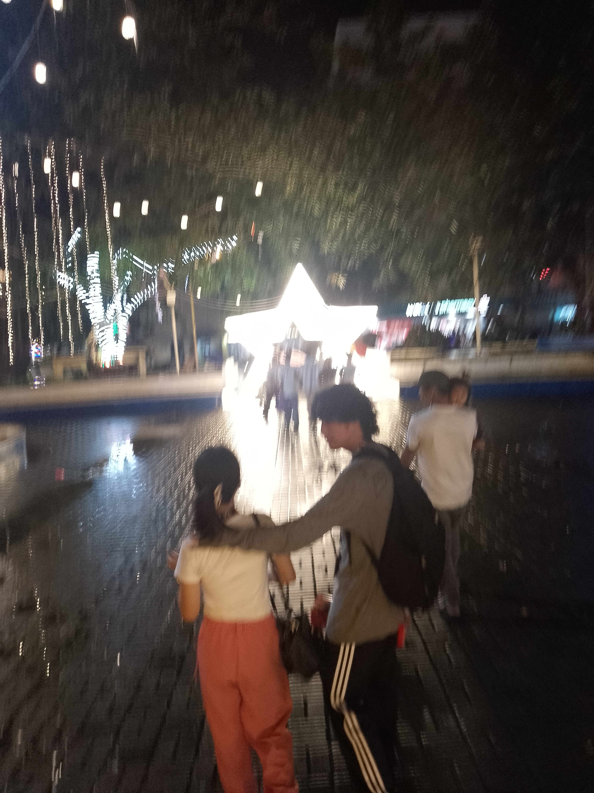
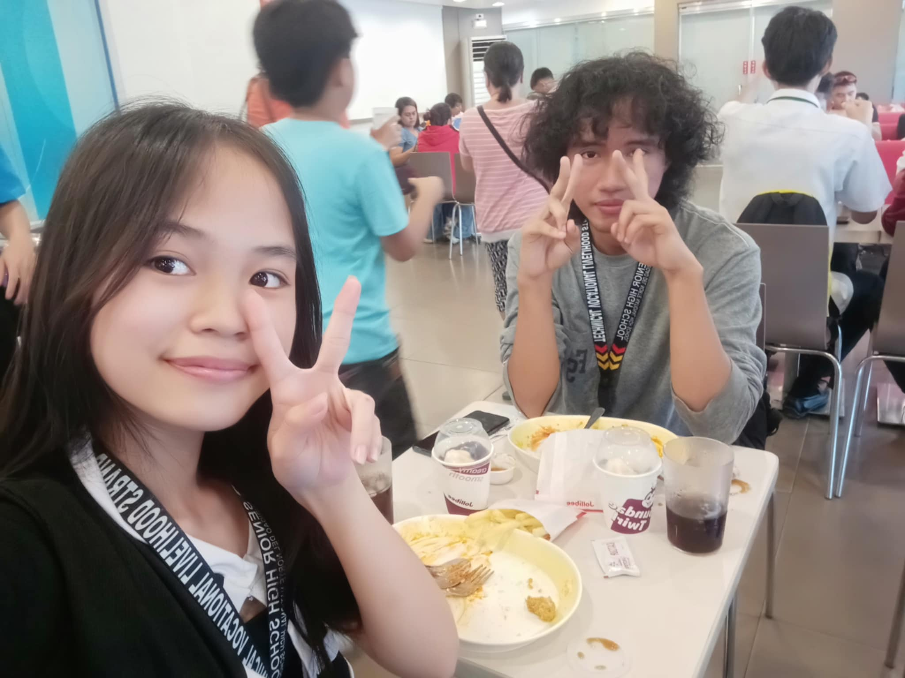
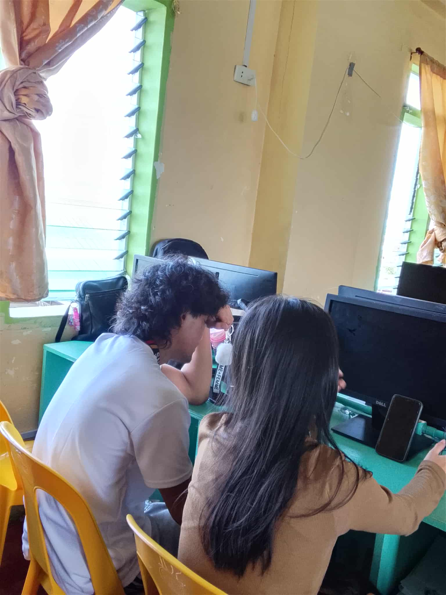
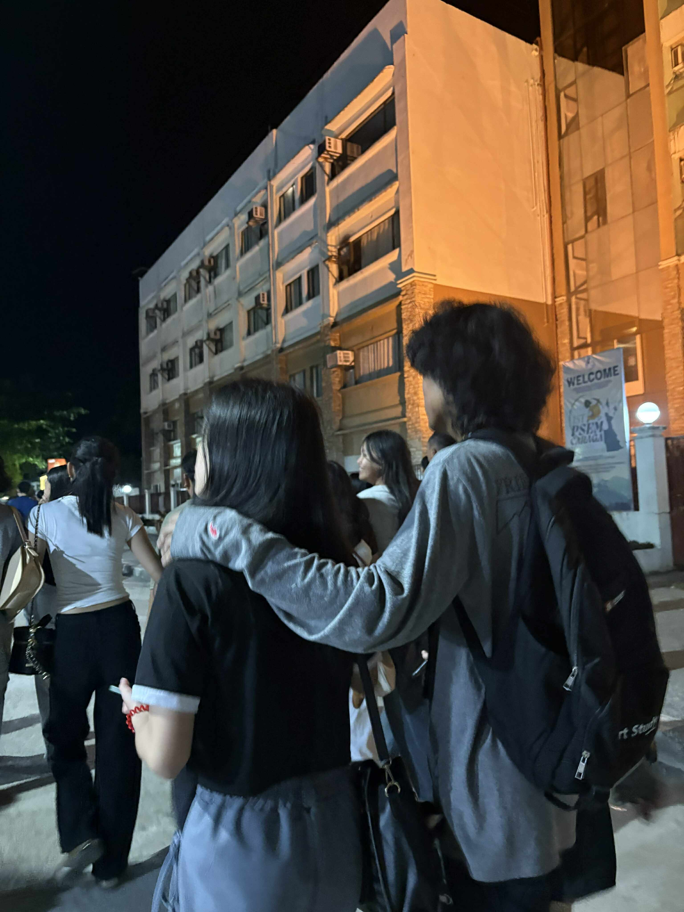
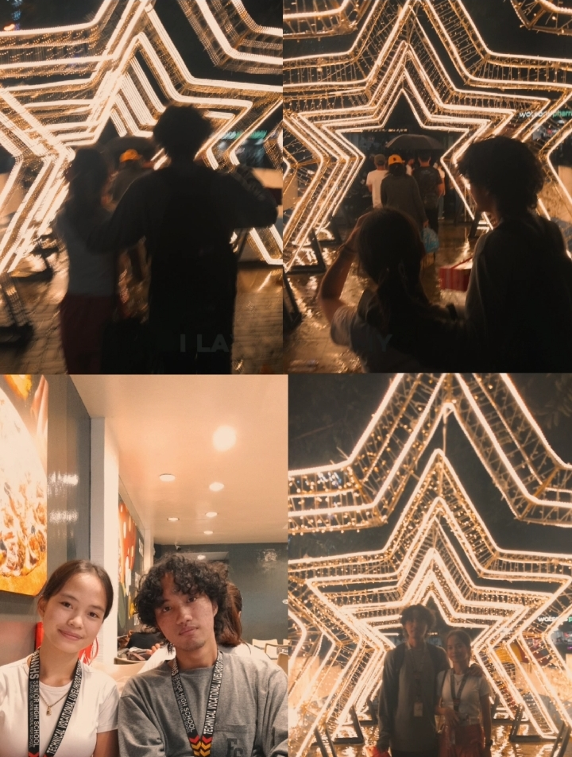

Open the box

I met you at a time when I was quietly shaping myself, learning how to become better even when no one was watching. In that season of becoming, our eyes met, and in you I saw a future—one I could never find during the days I walked alone, speaking only to my own shadows. You were a vision my solitude could not give me.

You brought hope into the darkest parts of me, into places where light once refused to reach. When I was lost in my own silence, you arrived like a gentle answer, reminding me that even the deepest night can soften when someone chooses to stay.

Because of the future I saw in you, I learned discipline. On days when laziness whispered comfort, I chose effort instead. I stood up when it was easier to rest, not out of pressure, but out of purpose—because loving you made growth feel meaningful.

You became my reason to move forward, to endure the slow work of becoming whole. And now I know this truth with certainty: you did not just walk into my life, Kyr—you became the light that gave my journey direction.

And in all of this, I want you to know how deeply I appreciate you. For your presence, your patience, your quiet strength, and the way you inspire me without ever asking. Thank you for being my hope, my direction, and my light. Kyr, my heart is grateful for you—always.
One last surprise…